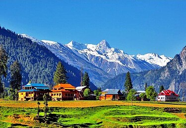

North India is a pure delight to mountain lovers and adventure enthusiasts. There are plenty of picturesque, popular, and off-the-wall hill stations nestled in the Himalayas that make for beautiful holiday destinations. And all of them are so spellbinding that it gets tough to choose one from the list of gorgeous places to visit in north India. Pick your dream destination and plan your most amazing holiday in India along with us.
Kashmir 
Kashmir is the northernmost geographical region of the Indian subcontinent. Until the mid-19th century, the term "Kashmir" denoted only the Kashmir Valley between the Great Himalayas and the Pir Panjal Range. The term has since come to encompass a larger area that includes the India-administered territories of Jammu and Kashmir and Ladakh, the Pakistan-administered territories of Azad Kashmir and Gilgit-Baltistan, and the Chinese-administered territories of Aksai Chin and the Trans-Karakoram Tract
Tourist Attraction
Epitomizing heavenly beauty on earth, Kashmir takes you closer to Nature’s magic through its pleasant weather, snow-capped mountains, gorgeous meadows, lush green gardens, stunning water bodies, traditional houseboats, scrumptious food, quaint valleys, magnificent architecture, world-famous pashmina, and sheer natural beauty. It is also a gateway to several other beautiful valleys of Kashmir.


Culture
The culture of Kashmir encompasses the spoken language, written literature, cuisine, architecture, traditions, and history of the Kashmiri people native to the northern part of the Indian subcontinent. The culture of Kashmir was influenced by the Persian as well as Central Asian cultures after the Islamic rule of Kashmir. Kashmiri culture is influenced by Hinduism, Buddhism and later by Islam.


Food
Kashmiri cuisine is the cuisine of the Kashmir Valley. The cuisine has strong influences from neighbouring regions in central Asia and the Indian subcontinent. Rice has been a staple food in Kashmir since ancient times. The equivalent for the phrase "bread and butter" in Kashmiri is haakh-batte (greens and rice). North Indian cuisine is famous for its diverse flavors and rich spices. Popular dishes include butter chicken, paneer tikka, and traditional bread like naan and roti.


Accomodation
Book your Hotel in Jammu & Kashmir online. No reservation costs. Great rates. Choose from a wide range of properties which Booking.com offers. Search now! Detailed reviews and recent photos. Know what to expect before you book. In order to feel like home and at the same time enjoy natural views in kashmir there are varities of hotel according to your comformt and budget. Below are some of them you can choose any which one you like the most.